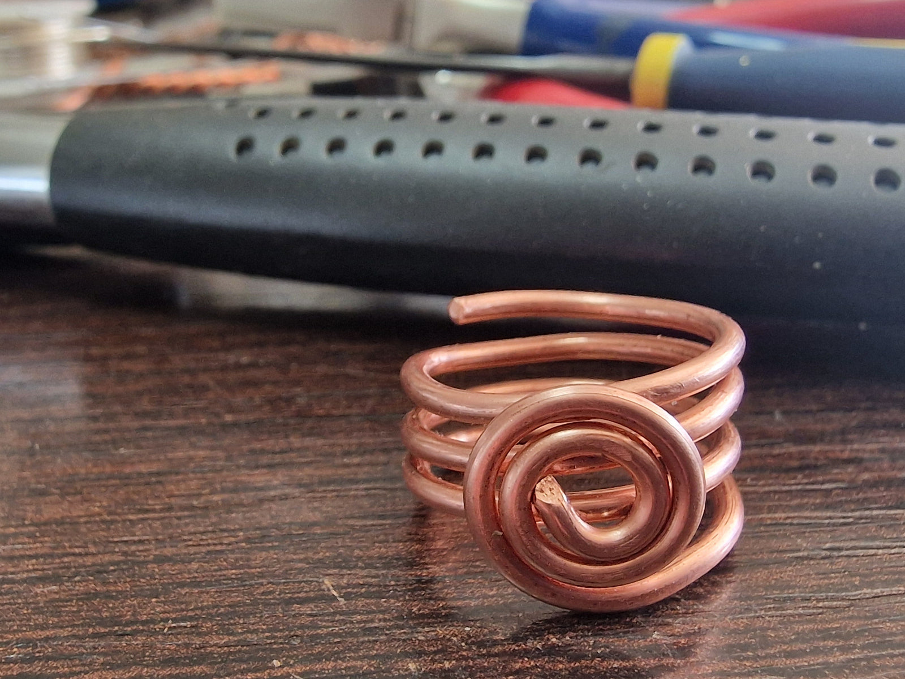
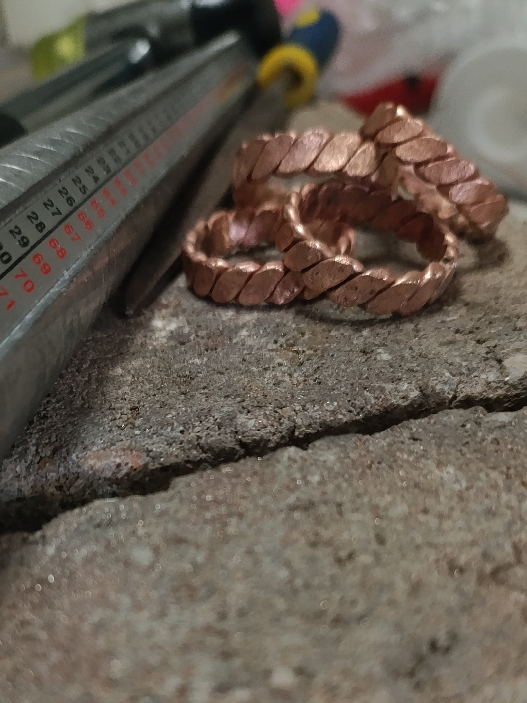
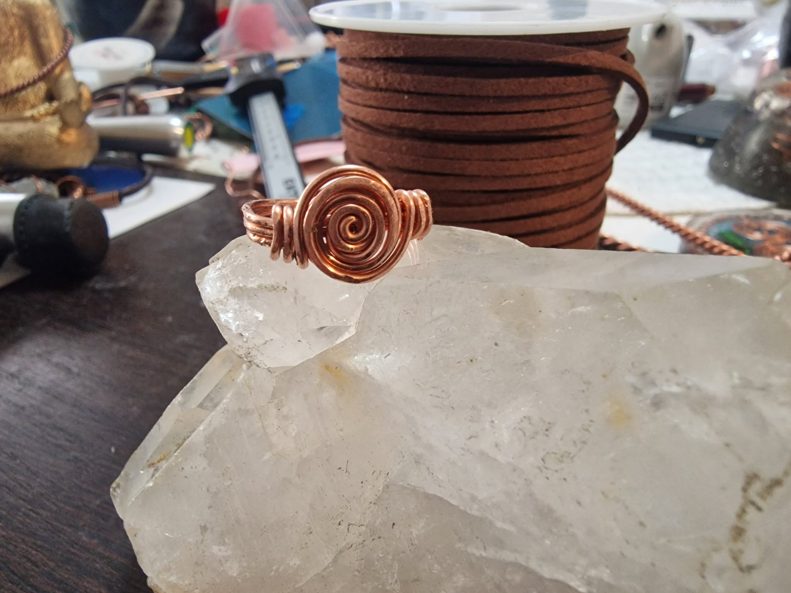

Gyűrűk
Szakrális arányok és a réz gyógyító ereje az ujjaidon, hogy minden mozdulatod a harmóniát sugározza.

Életörvény
Sacred Spiral Réz Gyűrű
Ez a kézzel készített réz gyűrű az ősi egyiptomi szakrális mértékrend energiáját követi, amelyet a beavatott kultúrák a harmónia és tudati erő aktiválására alkalmaztak.
Spirál formája az élet áramlását, a teremtés örvényét és a belső erő ébredését szimbolizálja. A réz vezeti az életerőt, tisztítja az energetikai blokkokat és támogatja a testi-lelki egyensúlyt. Nem csupán ékszer – energetikai erőtér a kezedben.
- Ősi szakrális arányok szerint készült
- Aktiválja az energiaáramlást és erősíti a fókuszt
- Harmóniát és védelmet hoz a mindennapokba

Szent Arány
Tensor Gyűrű
Finom, mégis erőteljes szerkezete összekapcsolja a viselőjét a földi és kozmikus energiák áramlásával. Támogatja a koncentrációt, a belső békét és a stabilitást.

Kibontakozás
Réz Gyűrű Virággal
Nincs túlgondolva – csak egy virágra emlékeztető spirál, amely a természet folyamatos kibontakozását idézi. Arra emlékeztet, hogy minden valódi növekedés belülről indul.
Adj meg egy pontos értéket 1.8 és 2.5 cm között.